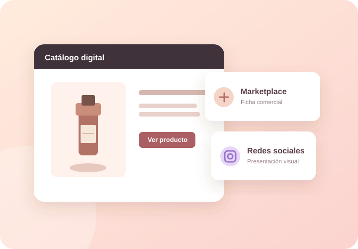

Catálogo propio
Un espacio web para presentar los productos y la información institucional.
SOLUCIÓN 03 / SALUD Y BIENESTAR
Organizamos la información de productos en un catálogo web y mostramos cómo puede adaptarse su presentación visual a diferentes entornos comerciales.

Visualización conceptual · Ver catálogo ↗EL SERVICIO
El ejemplo de Dr. Ehrlichs reúne un catálogo de productos de cuidado personal y tres presentaciones conceptuales de cómo una ficha puede verse en diferentes plataformas.
Productos, imágenes y descripciones organizados.
SOLUCIÓN EN ACCIÓN
La primera muestra el catálogo web. Las tres restantes son simulaciones visuales de formatos de plataformas externas.
Sitio informativo con presentación de la marca y catálogo de productos.
Ejemplo visual de ficha de producto para un marketplace.
Galería estática inspirada en una presentación para redes sociales.
Ejemplo visual de ficha comercial y presentación de un producto.
Sobre estas demostraciones: los formatos inspirados en Amazon, Instagram y Mercado Libre son prototipos visuales externos. No son cuentas, publicaciones comerciales ni integraciones oficiales con esas plataformas. Los datos de ventas y valoraciones que aparezcan en ellos son simulados.
QUÉ APORTA LA SOLUCIÓN
Un espacio web para presentar los productos y la información institucional.
Fichas y recursos visuales ajustados al formato de publicación previsto.
La preparación de contenidos no implica por sí misma publicar, gestionar ventas o integrar sistemas externos.
SIGUIENTE PASO
Contanos qué información necesitás digitalizar y conversemos sobre una solución adaptada a tu caso.